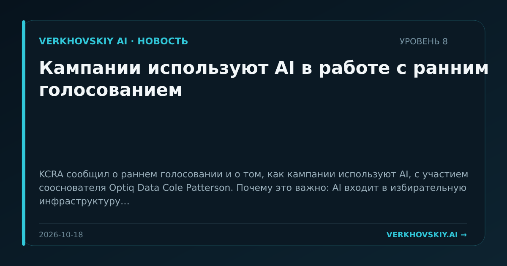

Кампании используют AI в работе с ранним голосованием
KCRA сообщил о раннем голосовании и о том, как кампании используют AI, с участием сооснователя Optiq Data Cole Patterson. Почему это важно: AI входит в избирательную инфраструктуру как инструмент кампаний, а не только как объект регулирования дезинформации. Это расширяет область политической ответственности за алгоритмические методы воздействия.